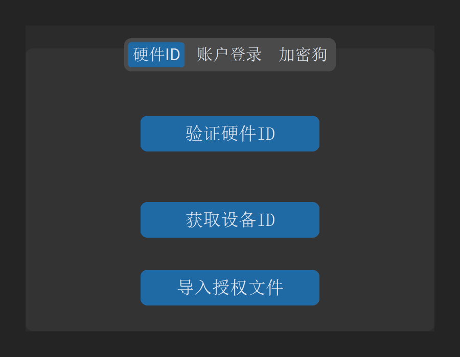
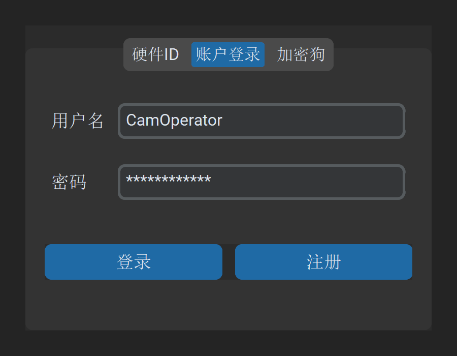
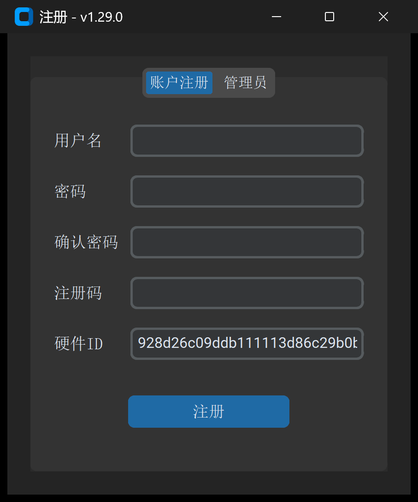
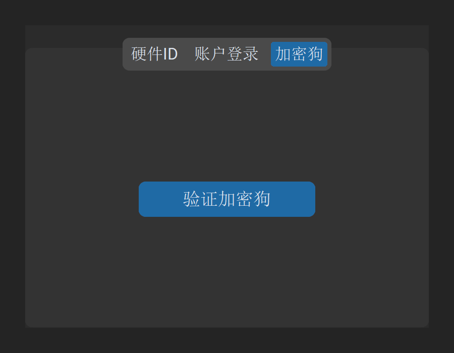
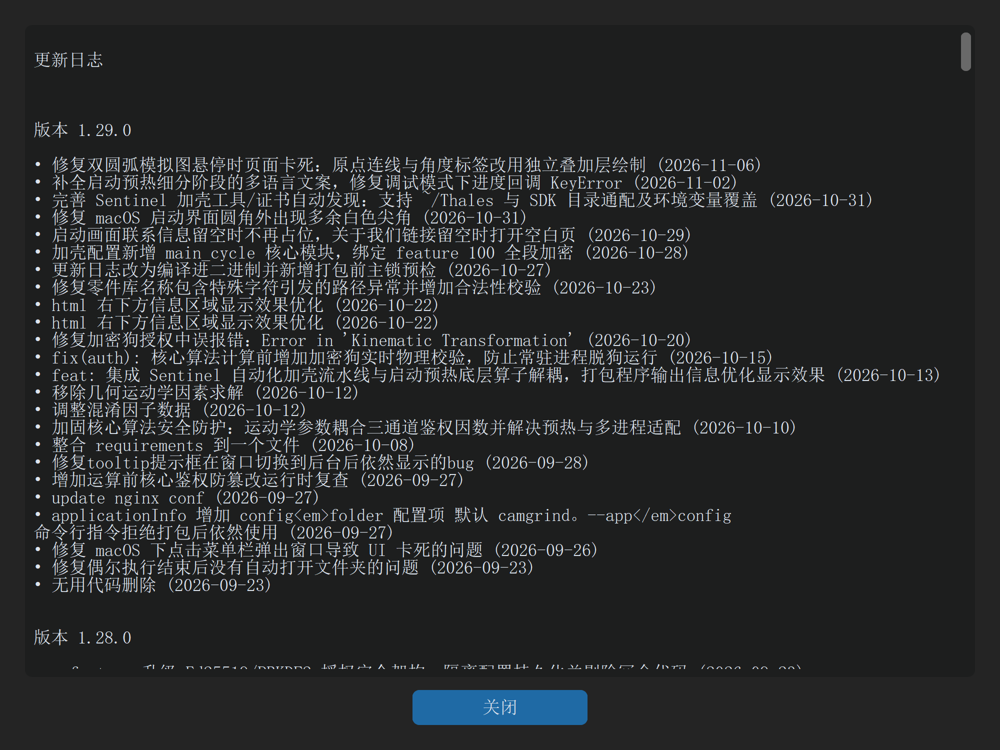

1.2 授权激活与版本升级
一句话说明：支持 Sentinel 硬件加密狗、Ed25519 离线许可文件、设备硬件 ID 及云端账户四种授权模式，并提供一键在线更新与历史日志查看。
四通道授权登录体系
若启动时未插入硬件加密狗，软件将弹出 登录 - v1.29.0 窗口。窗口包含 3 个选项卡：
1. 通道一：硬件 ID 与离线授权文件（推荐离线生产机床）

- 获取设备序列号：
- 点击
获取设备ID按钮，弹出硬件序列号弹窗，一键复制本机唯一硬件指纹。 - 将硬件序列号发送给管理员或售后支持人员开通许可。
- 点击
- 在线验证：
- 若车间数控电脑已联网，开通后点击
验证硬件ID即可一键激活。
- 若车间数控电脑已联网，开通后点击
- 离线许可文件导入（
导入授权文件）：- 适用于完全物理隔离的机床工控机。
- 将技术支持签发的数字签名许可文件（
cg_license.lic，基于 Ed25519 强加密体系）复制到本机。 - 点击
导入授权文件按钮，选择该.lic文件，系统核验通过后立即解锁并进入主窗口。
2. 通道二：账户登录与用户注册

- 账户登录：
- 输入授权用户名与密码，点击
登录按钮。 - 支持回车键（Enter）快捷提交登录。
- 输入授权用户名与密码，点击
- 用户注册：
- 点击
注册按钮，调出注册 - v1.29.0独立窗口。 - 窗口提供
账户注册与管理员两大选项卡。 - 填入用户名、密码、注册码及硬件序列号，点击
提交注册即可完成绑定。
- 点击

3. 通道三：硬件加密狗免登授权

- 免登直通：
- 将授权的 Sentinel SafeNet USB 加密狗插入电脑。
- 启动软件时系统将静默识别，无需在登录界面停留，直接进入主窗口。
- 登录界面补验：
- 若先打开了登录界面，插入加密狗后切换至
加密狗选项卡，点击验证加密狗即可直接登入。
- 若先打开了登录界面，插入加密狗后切换至
- 实时断开检测与状态栏提示：
- 成功通过加密狗登入后，主界面底部常驻状态栏：
🟢 加密狗授权已激活。 - 软件内置 3 秒心跳守护线程，若在加工代码生成或重要计算过程中拔出加密狗，系统将立即安全锁定以防误操作。
- 成功通过加密狗登入后，主界面底部常驻状态栏：
软件版本升级与日志查看
检查更新
- 点击顶部菜单栏
设置->检查更新。 - 软件自动比对远程版本服务器。若发现新版本，弹出更新引导并下载升级包。
查看更新日志
- 点击顶部菜单栏
设置->更新日志。 - 软件直接调出版本变更日志弹窗，分类罗列当前与历史版本的优化项、新增功能与修复清单。
